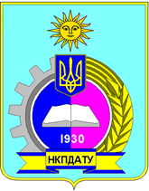

ОПДАФ
ПЛАНУВАННЯ ВИРОБНИЦТВА В АГРАРНИХ ФОРМУВАННЯХ
Методи та нормативна база планування
Механізм планування та система планів
Оперативне планування в сільськогосподарських підприємствах
Основні форми державного планування
Перспективне планування розвитку сільськогосподарських підприємств
Річне (поточне) планування економічного і соціального розвитку сільськогосподарського підприємства
Організація робочих місць та їх планування
Основні принципи і прогресивні форми організації праці
Поняття ринку праці, його елементи і функції
ОРГАНІЗАЦІЯ ВИКОРИСТАННЯ ТРУДОВИХ РЕСУРСІВ В АГРАРНИХ ФОРМУВАННЯХ
Лабораторна робота Встановлення розцінки трактористам в рослинництві.
Практична робота Встановити режим роботи підприємства
Практична робота Нарахування оплати праці в ремонтній майстерні.
Технологія зберігання і переобки продукції рослинництва
Післязбиральна переробка зернової маси
ХАРАКТЕРИСТИКА ЗЕРНОВИХ МАС ЯК ОБЄКТІВ ЗБЕРІГАННЯ
Практика з предмету "Технологія переробки продукції рослинництва
ПІСЛЯЗБИРАЛЬНА ОБРОБКА ЗЕРНОВИХ
Тестові завдання для самоконтролю